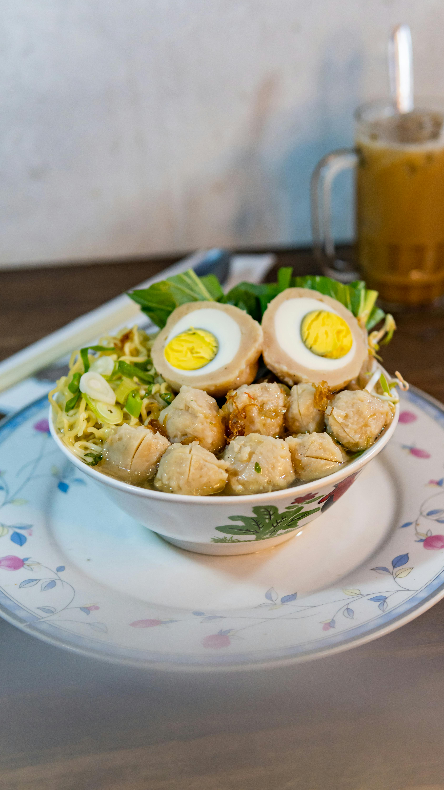
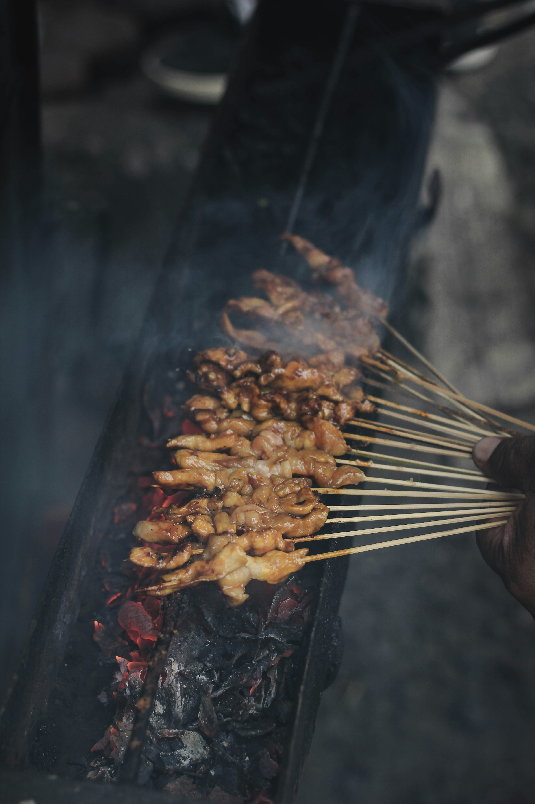
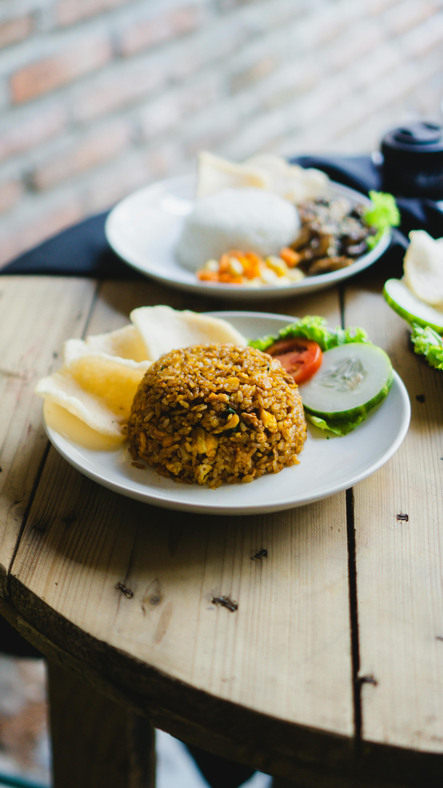

M

A

K

A
N
Hidangan Indonesia merupakan salah satu tradisi kuliner yang paling beragam dan kaya di dunia, memadukan cita rasa kuat dari berbagai
rempah-rempah yang mencerminkan kekayaan budaya Nusantara. Dengan lebih dari 6.000 pulau berpenghuni, Indonesia memiliki masakan
yang tidak hanya bervariasi antar daerah, tetapi juga terpengaruh oleh warisan dari berbagai bangsa seperti India, Tiongkok, Timur Tengah,
hingga Eropa. Keanekaragaman bahan dan bumbu seperti kemiri, cabai, lengkuas, jahe, kunyit, serta teknik memasak yang diwariskan turun
-temurun menjadikan kuliner Indonesia sebagai bagian penting dari identitas budaya nasional.